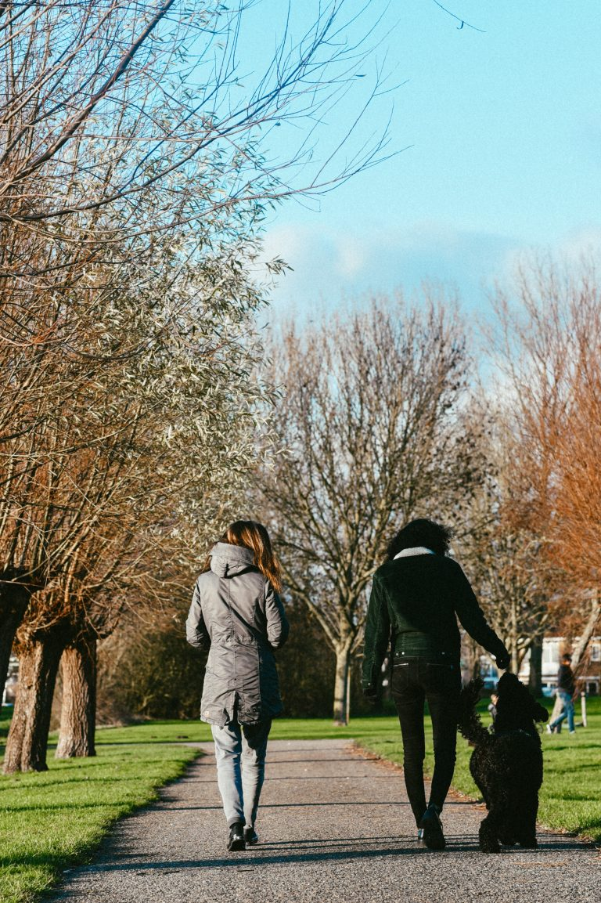

Administratie & geld
Ordenen en bijhouden van je administratie en omgaan met geld.

Aanbod
Meer grip op het leven, op de leefgebieden waar jij vastloopt.
Wij bieden individuele begeleiding aan jeugdigen en volwassenen die vastlopen op bepaalde leefgebieden. Door coaching en vaardighedentraining helpen we je meer grip te krijgen op het leven.
Therapiehond Teddy sluit desgewenst aan tijdens begeleidingsmomenten. We werken onder andere met ReAttach therapie en weerbaarheidstraining.
De eerste stap om ergens te komen is besluiten dat je niet blijft waar je bent.
Doelen
Ordenen en bijhouden van je administratie en omgaan met geld.
Werken aan zelfvertrouwen. Wie ben ik, waar ben ik goed in, wat wil ik leren?
Sociale vaardigheden vergroten en je netwerk uitbreiden.
Verlieservaringen een plek geven en veerkracht versterken.
Hulp bij contact met organisaties en meegaan naar afspraken.
Ondersteuning bij terugkeer naar onderwijs of arbeid.